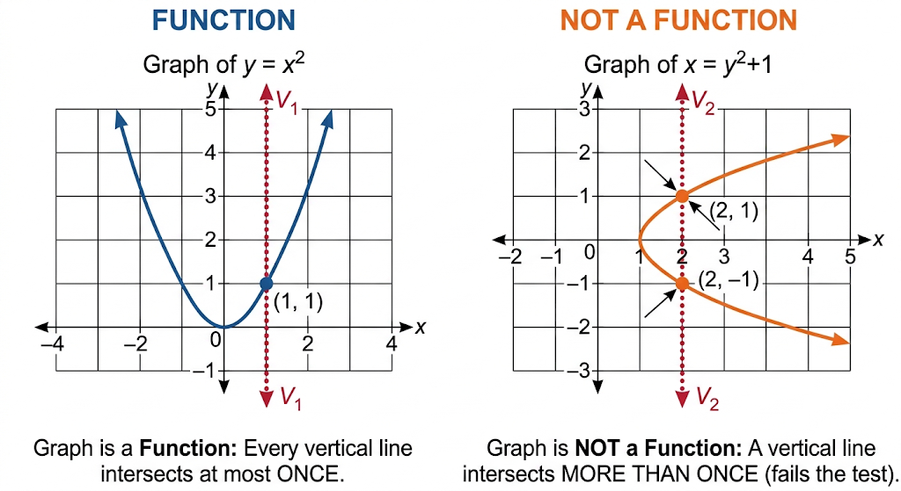

HIGHER MATHEMATICS
Lecture 01
Elementary
Review of function, Properties of function, Types of function, Vertical line test
Sunday, August 16, 2026
Introduction
In this lecture we are reviewing the concept of function and relation, basic properties of a function and a relation, diffirent types of function, how to check wheter a relation is function or not using vertical line test and related problems.
Relation
Definition
Let \(A\) and \(B\) be two non-empty sets. A relation \(R\) from \(A\) to \(B\) is a subset of the Cartesian product \(A \times B\). That is, \(R \subseteq A \times B = \{(a, b) \mid a \in A, b \in B\}\). If an element \(a \in A\) is related to an element \(b \in B\) under \(R\), we write \((a, b) \in R\) or \(a \, R \, b\).
Example
Let \(A = \{1, 2, 3\}\) and \(B = \{4, 5\}\). The Cartesian product is: \[A \times B = \{(1, 4), (1, 5), (2, 4), (2, 5), (3, 4), (3, 5)\}\]
Define a relation \(R\) from \(A\) to \(B\) by the rule “is less than”: \[R = \{(a, b) \in A \times B \mid a < b\}\]
Since every element in \(A\) is strictly less than every element in \(B\), we obtain: \[R = \{(1, 4), (1, 5), (2, 4), (2, 5), (3, 4), (3, 5)\}\]
Now consider a restricted relation \(R_1 = \{(1, 4), (1, 5), (2, 5)\}\). Notice that \(1 \in A\) is associated with both \(4 \in B\) and \(5 \in B\). This remains a valid relation, as any arbitrary subset of \(A \times B\) constitutes a relation.
Function
Definition
Let \(X\) and \(Y\) be non-empty sets. A function \(f\) from \(X\) to \(Y\) (denoted \(f: X \to Y\)) is a specific type of relation that associates with each element \(x \in X\) a unique element \(y \in Y\). We write \(y = f(x)\), where \(y\) is called the image of \(x\) under \(f\), and \(x\) is called the pre-image of \(y\).
Properties
For a relation \(R \subseteq X \times Y\) to qualify as a function \(f: X \to Y\), it must satisfy two essential conditions:
- Totality (Existence): Every element in the domain \(X\) must be mapped to at least one element in \(Y\). Formally: \[\forall x \in X, \exists y \in Y \text{ such that } (x, y) \in f\]
- Uniqueness (Well-definedness): No element in \(X\) can be mapped to more than one element in \(Y\). Formally: \[\forall x \in X, \forall y_1, y_2 \in Y, \quad \left( (x, y_1) \in f \land (x, y_2) \in f \right) \implies y_1 = y_2\]
Example
Let \(X = \{1, 2, 3\}\) and \(Y = \{2, 4, 6, 8\}\). Define \(f: X \to Y\) by the rule \(f(x) = 2x\).
The set of ordered pairs for \(f\) is: \[f = \{(1, 2), (2, 4), (3, 6)\}\]
- Totality Check: Every element of \(X\) (\(\{1, 2, 3\}\)) appears exactly once as a first coordinate.
- Uniqueness Check: No element in \(X\) maps to multiple elements in \(Y\). Thus, \(f\) is a well-defined function.
Main Difference of Relation and Function
Main Points of Difference
| Feature | Relation | Function |
|---|---|---|
| Mapping Restriction | An element of the domain can map to zero, one, or multiple elements in the codomain. | Every element of the domain must map to exactly one element in the codomain. |
| Existence Requirement | Some elements in the domain set do not need to have an image. | Every element in the domain must have an image. |
| Generality | Every function is a relation (\(f \subseteq X \times Y\)). | Not every relation is a function; it is a restricted relation. |
Vertical Line Test for Functions from a Graph
A visual method to determine whether a curve in the Cartesian plane represents a function \(y = f(x)\) is the Vertical Line Test:
A graph in the \(xy\)-plane represents a function of \(x\) if and only if no vertical line intersects the graph at more than one point.

- If a vertical line intersects the graph at two or more points: The same \(x\)-value maps to multiple \(y\)-values, violating uniqueness. It is a relation, not a function.
- If every vertical line intersects the graph at most once: The graph represents a well-defined function.
Problems
Problem 1: Evaluate \(y^2 = x^2\)
- Algebraic Analysis: Solving for \(y\) yields \(y = \pm \sqrt{x^2} = \pm |x|\). For \(x = 2\), \(y = 2\) or \(y = -2\). The single input \(x = 2\) yields two output values, violating uniqueness.
- Conclusion: \(y^2 = x^2\) defines a relation, but not a function.
Problem 2: Evaluate \(y = x^2\)
- Algebraic Analysis: For every real input \(x\), \(x^2\) produces a single, non-negative real number. For example, \(x = 2 \implies y = 4\) and \(x = -2 \implies y = 4\). Multiple inputs can share an output, but each input has a unique output.
- Conclusion: \(y = x^2\) is a valid function.
Problem 3: Evaluate \(x^2 + y^2 = 9\)
- Algebraic Analysis: Solving for \(y\) yields \(y = \pm \sqrt{9 - x^2}\). For \(x = 0\), \(y = 3\) or \(y = -3\). A vertical line at \(x = 0\) touches the circle at two points: \((0, 3)\) and \((0, -3)\).
- Conclusion: It is a relation, but not a function.
Types of Functions
Injective (One-to-One)
A function \(f: X \to Y\) is injective if distinct elements in \(X\) map to distinct elements in \(Y\). \[\forall x_1, x_2 \in X, \quad f(x_1) = f(x_2) \implies x_1 = x_2\] Example: \(f: \mathbb{R} \to \mathbb{R}\) defined by \(f(x) = 3x + 1\). If \(3x_1 + 1 = 3x_2 + 1\), then \(x_1 = x_2\).
Surjective (Onto)
A function \(f: X \to Y\) is surjective if every element in the codomain \(Y\) is the image of at least one element in the domain \(X\). \[\forall y \in Y, \quad \exists x \in X \text{ such that } f(x) = y\] Example: \(f: \mathbb{R} \to \mathbb{R}\) defined by \(f(x) = x^3\). For any \(y \in \mathbb{R}\), there exists \(x = \sqrt[3]{y} \in \mathbb{R}\) such that \(f(x) = y\).
Bijective (One-to-One and Onto)
A function \(f: X \to Y\) is bijective if it is both injective and surjective. Bijective functions possess an inverse function \(f^{-1}: Y \to X\). Example: \(f: \mathbb{R} \to \mathbb{R}\) defined by \(f(x) = 2x - 5\). It is both one-to-one and onto; hence it is bijective.
Image
Definition
Let \(f: X \to Y\) be a function. For any element \(x \in X\), the element \(y \in Y\) assigned to \(x\) under \(f\) is called the image of \(x\) under \(f\), denoted \(y = f(x)\).
More generally, for a subset \(A \subseteq X\), the image of \(A\) under \(f\) is the set of all images of its elements: \[f(A) = \{f(x) \in Y \mid x \in A\}\]
Example
Consider the function \(f: \mathbb{R} \to \mathbb{R}\) defined by \(f(x) = 2x - 1\).
Single Element Image: To find the image of \(x = 2\), evaluate the function at \(2\): \[f(2) = 2(2) - 1 = 3\] Here, \(3\) is the image of \(2\) under \(f\) (and \(2\) is the pre-image of \(3\)).
Subset Image: For the set \(A = \{0, 1, 2\}\), evaluating each element yields:
- \(f(0) = -1\)
- \(f(1) = 1\)
- \(f(2) = 3\)
Therefore, the image of the set \(A\) is \(f(A) = \{-1, 1, 3\}\).
Inverse Function
Definition
Let \(f: X \to Y\) be a bijective function. The inverse function of \(f\), denoted \(f^{-1}: Y \to X\), is the unique function that reverses the mapping of \(f\). It is defined such that for every \(x \in X\) and \(y \in Y\): \[f^{-1}(y) = x \iff f(x) = y\]
A function has a well-defined inverse if and only if it is bijective (both injective and surjective).
Key Properties
- Composition Identity: Composing a function with its inverse yields the identity function: \[(f^{-1} \circ f)(x) = x \quad \forall x \in X\] \[(f \circ f^{-1})(y) = y \quad \forall y \in Y\]
- Graphical Symmetry: The graph of \(y = f^{-1}(x)\) is the reflection of the graph of \(y = f(x)\) across the line \(y = x\).
- Domain and Range Swap: \[\operatorname{Dom}(f^{-1}) = \operatorname{Ran}(f)\] \[\operatorname{Ran}(f^{-1}) = \operatorname{Dom}(f)\]
Example & Method to Find Inverse
Find the inverse of \(f: \mathbb{R} \to \mathbb{R}\) given by \(f(x) = 2x + 3\).
- Set \(y = f(x)\): \[y = 2x + 3\]
- Solve algebraically for \(x\) in terms of \(y\): \[y - 3 = 2x \implies x = \frac{y - 3}{2}\]
- Replace \(x\) with \(f^{-1}(y)\) (or swap variables to express as a function of \(x\)): \[f^{-1}(x) = \frac{x - 3}{2}\]
- Verification with Real Values:
- Using \(f(x)\): \(f(2) = 2(2) + 3 = 7\).
- Using \(f^{-1}(x)\): \(f^{-1}(7) = \frac{7 - 3}{2} = 2\).
Problems: Finding Inverse Functions
Problem 1: Linear Function
Find the inverse of \(f(x) = \frac{3x - 5}{2}\) defined on \(f: \mathbb{R} \to \mathbb{R}\).
Step 1 (Set \(y = f(x)\)): \[y = \frac{3x - 5}{2}\]
Step 2 (Solve for \(x\) in terms of \(y\)): \[2y = 3x - 5\] \[3x = 2y + 5 \implies x = \frac{2y + 5}{3}\]
Step 3 (Write \(f^{-1}(x)\)): \[f^{-1}(x) = \frac{2x + 5}{3}\]
Problem 2: Rational Function with Domain Restriction
Find the inverse of \(g(x) = \frac{2x + 1}{x - 4}\) where \(\operatorname{Dom}(g) = \mathbb{R} \setminus \{4\}\).
Step 1 (Set \(y = g(x)\)): \[y = \frac{2x + 1}{x - 4}\]
Step 2 (Isolate \(x\)): \[y(x - 4) = 2x + 1\] \[xy - 4y = 2x + 1\] \[xy - 2x = 4y + 1\] \[x(y - 2) = 4y + 1 \implies x = \frac{4y + 1}{y - 2}\]
Step 3 (Write \(g^{-1}(x)\) and state its domain): \[g^{-1}(x) = \frac{4x + 1}{x - 2}\] \[\operatorname{Dom}(g^{-1}) = \operatorname{Ran}(g) = \mathbb{R} \setminus \{2\}\]
Problem 3: Radical Function with Restricted Domain
Find the inverse of \(h(x) = \sqrt{x - 3} + 2\) where \(\operatorname{Dom}(h) = [3, \infty)\) and \(\operatorname{Ran}(h) = [2, \infty)\).
Step 1 (Set \(y = h(x)\)): \[y = \sqrt{x - 3} + 2 \quad (y \ge 2)\]
Step 2 (Solve for \(x\)): \[y - 2 = \sqrt{x - 3}\] \[(y - 2)^2 = x - 3 \implies x = (y - 2)^2 + 3\]
Step 3 (Write \(h^{-1}(x)\) with explicit domain restriction): \[h^{-1}(x) = (x - 2)^2 + 3 \quad \text{for } x \ge 2\] (Note: The domain restriction \(x \ge 2\) is necessary because \(\operatorname{Dom}(h^{-1}) = \operatorname{Ran}(h) = [2, \infty)\).)
Domain
Formal Definition
The domain of a function \(f: X \to Y\), denoted \(\operatorname{Dom}(f)\), is the set of all inputs \(x \in X\) for which the function is defined and produces a real (or valid) output.
How to Find the Domain?
To find the domain over real numbers \(\mathbb{R}\), establish domain restrictions to prevent undefined operations:
- Polynomial Form (\(ax + b\), \(ax^2 + bx + c\)): Defined for all real numbers. \[\text{Domain} = \mathbb{R} = (-\infty, \infty)\]
- Rational Form (\(\frac{g(x)}{h(x)}\)): Division by zero is undefined. \[\text{Condition: } h(x) \neq 0\]
- Square Root Form (\(\sqrt{g(x)}\)): Even roots of negative numbers are non-real. \[\text{Condition: } g(x) \ge 0\]
- Logarithmic Form (\(\log(g(x))\)): Logarithms require strictly positive arguments. \[\text{Condition: } g(x) > 0\]
- Combined Rational and Radical Form (\(\frac{1}{\sqrt{g(x)}}\)): \[\text{Condition: } g(x) > 0\]
Codomain
Definition
The codomain of a function \(f: X \to Y\) is the entire set \(Y\) into which all outputs of the function are declared to fall. It is specified as part of the function’s signature.
Example
In the function definition \(f: \mathbb{R} \to \mathbb{R}\) given by \(f(x) = x^2\), the codomain is \(\mathbb{R}\) (the set of all real numbers).
Range
Definition
The range (or image) of a function \(f: X \to Y\), denoted \(\operatorname{Ran}(f)\) or \(f(X)\), is the set of all actual output values produced by applying \(f\) to elements of \(X\). \[\operatorname{Ran}(f) = \{y \in Y \mid \exists x \in X, f(x) = y\}\]
Example
For \(f: \mathbb{R} \to \mathbb{R}\) defined by \(f(x) = x^2\), the range is the set of all non-negative real numbers: \[\operatorname{Ran}(f) = [0, \infty)\]
Difference Between Codomain and Range
- The codomain is the target set declared in the function specification (\(Y\)).
- The range is the actual subset of elements in \(Y\) that are hit by the mapping (\(\operatorname{Ran}(f) \subseteq Y\)).
- A function is surjective if and only if \(\text{Range} = \text{Codomain}\).
Problems: Finding Domain and Range
Problem 1: Find the domain and range of \(f(x) = \frac{1}{x - 3}\)
Domain: The denominator cannot be zero: \[x - 3 \neq 0 \implies x \neq 3\] \[\operatorname{Dom}(f) = \mathbb{R} \setminus \{3\} = (-\infty, 3) \cup (3, \infty)\]
Range: Let \(y = \frac{1}{x - 3}\). Solve for \(x\): \[y(x - 3) = 1 \implies x - 3 = \frac{1}{y} \implies x = \frac{1}{y} + 3\] For \(x\) to exist as a real number, \(y \neq 0\). \[\operatorname{Ran}(f) = \mathbb{R} \setminus \{0\} = (-\infty, 0) \cup (0, \infty)\]
Problem 2: Find the domain and range of \(g(x) = \sqrt{4 - x^2}\)
Domain: The expression under the radical must be non-negative: \[4 - x^2 \ge 0 \implies x^2 \le 4 \implies -2 \le x \le 2\] \[\operatorname{Dom}(g) = [-2, 2]\]
Range: Since \(x \in [-2, 2]\), \(0 \le x^2 \le 4\). Evaluating the boundary values:
- Minimum value occurs when \(x^2 = 4 \implies g(x) = \sqrt{4 - 4} = 0\).
- Maximum value occurs when \(x^2 = 0 \implies g(x) = \sqrt{4 - 0} = 2\). \[\operatorname{Ran}(g) = [0, 2]\]
Problem 3: Find the domain of \(h(x) = \log(x^2 - 5x + 6)\)
- Domain: The argument of the logarithm must be strictly greater than zero: \[x^2 - 5x + 6 > 0 \implies (x - 2)(x - 3) > 0\] Solving the inequality yields: \[x < 2 \quad \text{or} \quad x > 3\] \[\operatorname{Dom}(h) = (-\infty, 2) \cup (3, \infty)\]
Practice Problems
Question 1
Define the following terms with suitable examples:
- Function
- Injective Function (One-to-One Function)
- Surjective Function (Onto Function)
- Image of a Function
Question 2
Find the domain and range of the real-valued function \(f(x) = \sqrt{x^2 + 25}\).
Question 3
Consider the relation given by \(y = \frac{x + 1}{x - 2}\).
- Plot the graph of the relation on a Cartesian coordinate plane.
- Using the Vertical Line Test, demonstrate whether this relation is a function.
- Determine the inverse relation \(f^{-1}(x)\) and state its domain.
Question 4 BUET: 17-18
In a circle centered at \(O\), the radius is \(10\text{ cm}\) and the length of the arc \(AB\) is \(14\text{ cm}\).
- Determine the measure of \(\angle AOB\) (in degrees, minutes, and seconds).
- Calculate the area of the smaller region enclosed by the arc \(AB\) and the chord \(AB\) (the minor segment).